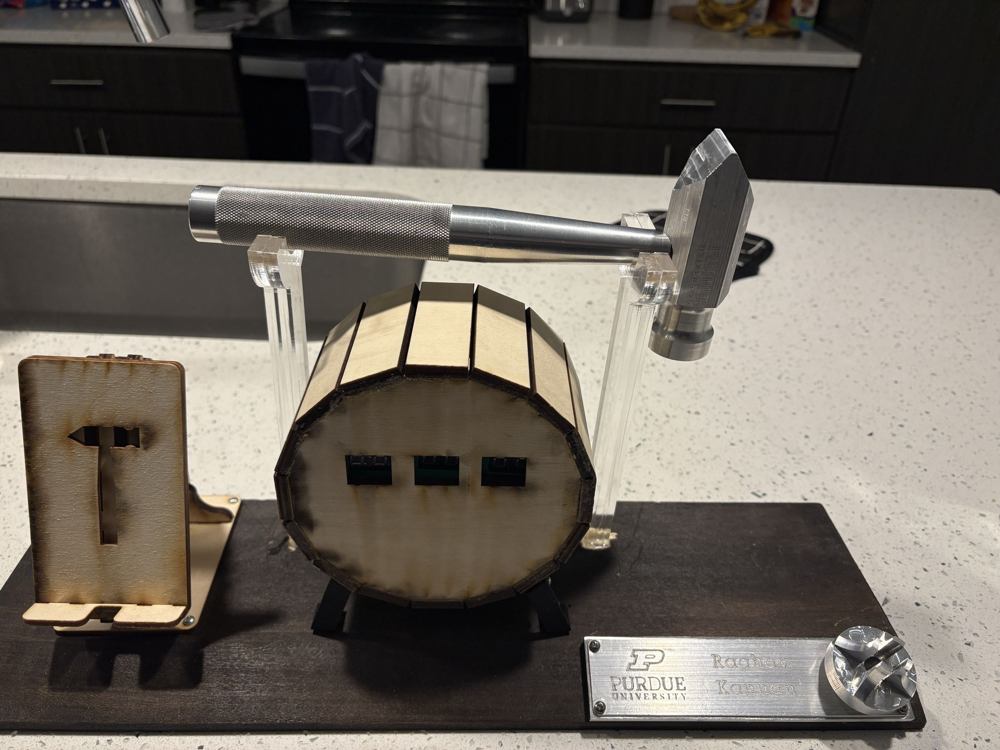
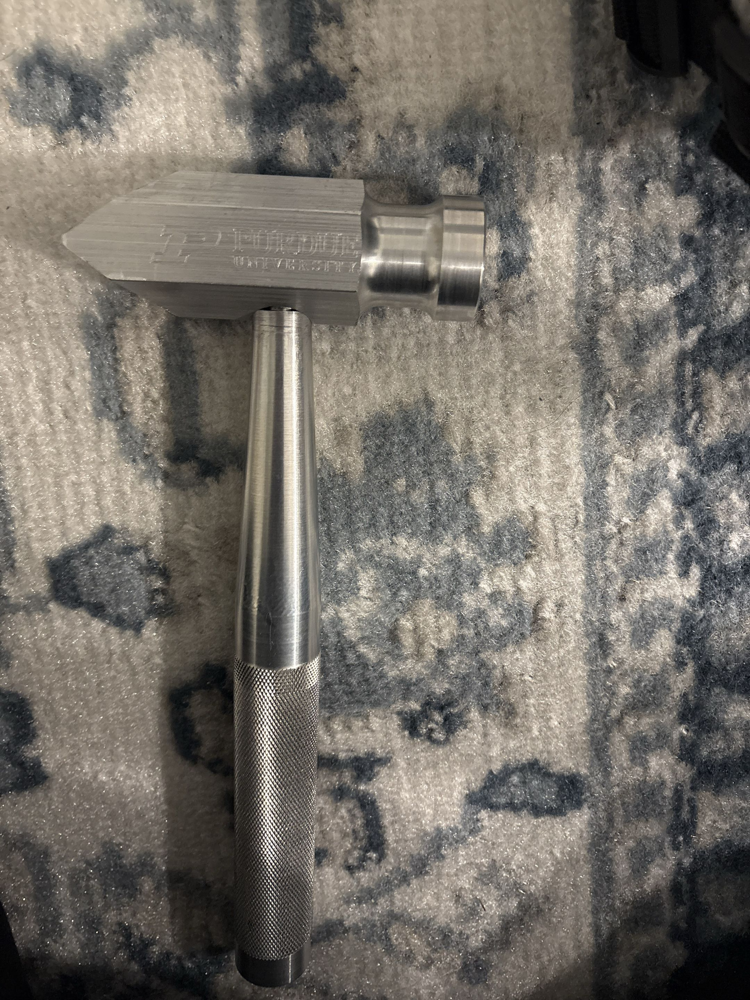
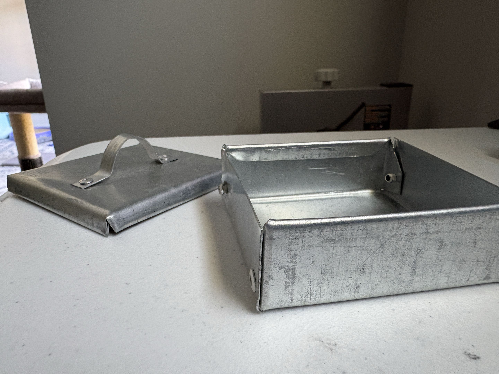
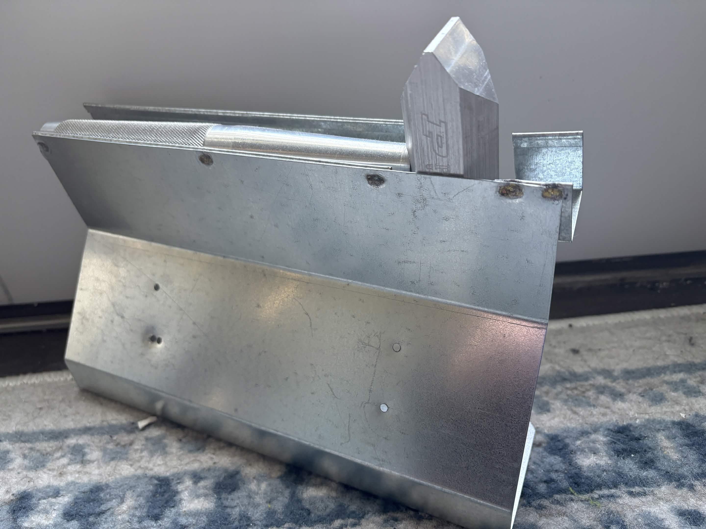

Problem
Students require a method to fabricate sheet metal components for their engineering projects while learning proper design and manufacturing techniques.
My role
I help run the sheet metal fabrication studio in the ME machine shop for ME 264 (sophomore design), and for any projects ME students may need to work on including Senior Design, Projects for Clubs, and Personal Projects. That means two jobs at once: fabricating parts myself, and teaching students to go from a CAD model to a finished, in-tolerance part safely.
- Instruct students on every machine in the studio: manual brake, punch, foot and handheld shears, roller, pneumatic press, spot welder, and riveting stations
- Review student part designs for manufacturability before they touch material
- Enforce shop safety practice and correct technique on the floor
Processes & capabilities
- Brake bending: selecting bend radii for material and thickness, sequencing bend order so later bends stay reachable, hemming edges for stiffness and safety
- Punching: relief cuts to prevent tearing at bend intersections, choosing punch shapes for the feature
- Shearing: foot and handheld shears, including chamfering and filleting corners
- Joining: spot welding and riveting, and choosing between them based on load, access, and disassembly needs
- Forming: roller for curved sections, pneumatic press operations
Design guidance I teach
- Design for manufacturability: minimum flange lengths, bend allowance, and K-factor when flat patterns matter
- GD&T and tolerance stackup: which dimensions the process can actually hold, and where tolerance should be spent
- Common failure modes: tearing at unrelieved corners, springback, bends fighting each other in the wrong order

